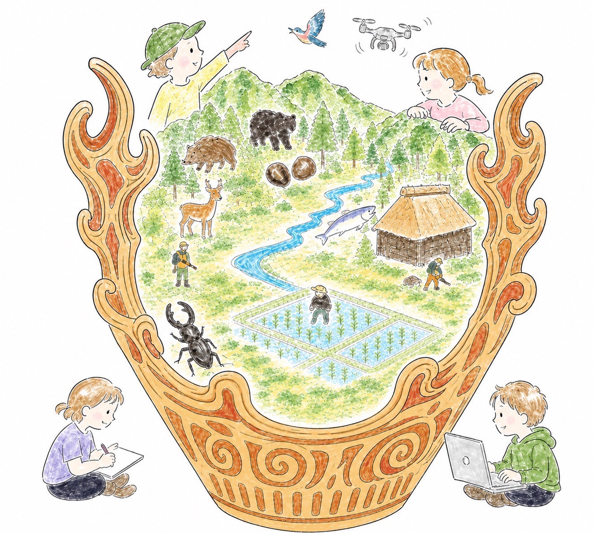

日帰り26日 11:00〜
八木のヤギ牧場で、お弁当と外あそび。

学校について
里山みらくる小学校は、決まった校舎を持たない学びの場です。身近な生き物、季節の変化、地域の人たちの営みから、自然と暮らしのつながりを考えます。
おもしろいと思ったことを話し、外に出て自分の手でたしかめる。子どもも大人も、それぞれの場所から関われる学校です。

学校の活動
小学生を中心に、親子や大人も参加できます。
授業・活動のお知らせ（公式Instagram・新しいタブで開きます）動植物や地域の人に出会い、やってみたいことをみんなで考えます。
今回の修学旅行を見る公開された授業を、あとから見ることができます。
公式YouTubeで見る（新しいタブで開きます）いまの活動
八木のヤギ牧場で、お弁当と外あそび。
収穫や焚き火でのカレーづくりを予定しています。
応援・協力
公開授業や教材づくり、自然体験を支える応援を募っています。寄付だけでなく、活動を誰かに紹介する、運営を手伝う、得意なことで協力するといった関わり方も歓迎です。